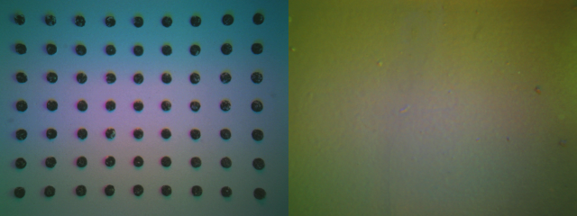
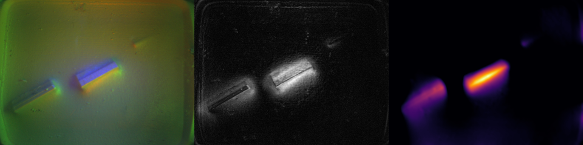

The negative result that shaped everything
FEATS (U-net, FEA-labeled) does not transfer: it is trained on marker-dot gel, React's sensors are markerless — on our frames it returns its no-contact output regardless of contact. Verified in-domain at ρ = 0.96 on its own dataset, so this is a domain effect, not a weak model (full matrix).

Left: FEATS training gel (63 marker dots). Right: React gel, markerless.
Method 1 — physics: depth reconstruction → normal force
normalization→ per-pixel MLP
→ surface normals→ Poisson
integration→ background
plane removal→ indentation δ→ F = c·Σδ·dA
Zero training frames; one fitted scalar (c, from force-sensor ground truth). Every design decision was driven by a measured defect — the full pipeline, the optimization journey, and the volume-vs-max-depth answer are on the method page.

Strongest motherboard press: raw | difference | reconstructed depth. More examples (20 panels, 10 clips) in the gallery.
Validated against three force-labeled datasets
| dataset (gel) | ours | FEATS U-net | FeelAnyForce |
|---|---|---|---|
| FEATS val (marker) | 0.74 | 0.96 in-domain | 0.43 |
| FoTa cnc_Mini (markerless) | 0.43 / 0.65 | 0.07 | 0.83 / 0.92 |
| GlowTact (markerless) | 0.63 | 0.04 | 0.90 |
| React (no GT — agreement) | physics vs FeelAnyForce ρ = 0.91; both read ≈0 N off-contact | ||
Each network dominates its own gel domain and collapses outside it; the physics pipeline is the only one that works everywhere. Predicted-vs-ground-truth scatters, per dataset, on the results page.
Method 2 — force-informed action targets
ptarget = pobserved + (F̂n / k) · n̂, k = 1500 N/m
The estimated force becomes a virtual position target past the contact surface (DexForce-style): the action stays a pose, free space is untouched, and an impedance controller reproduces the demonstrated force at deployment. The transform is loss-free — invariance 0e+00 m, roundtrip 9e-14 N, penetration median 0.9 mm. Interactive walkthrough on the actions page.

Takeaway
- Labelling React: FeelAnyForce as primary labeller (strongest on markerless Mini), the physics pipeline as an independent audit — they agree at ρ = 0.91 and cannot share failure modes.
- Training: use force-informed targets (Method 2) with the estimated force as an auxiliary head; absolute newtons are coarse (±25–40%), trends are reliable.
- New gel / new sensor: the physics pipeline is the only estimator that works out of the box.
Debug log
10 things that actually went wrong, and their fixes (click to expand)
| found | fix |
|---|---|
| FEATS returns its no-contact output on every markerless frame | switched force estimation to photometric-stereo depth (negative result kept above) |
| fixed dot-threshold 55 detects 0 dots (our dots bottom out at gray 56) | percentile-based threshold — then made moot by the markerless finding |
| 1.1 mm phantom depth at the image border (Poisson/Neumann edge artifact) | exclude a 12/16-px margin from force integration |
| contact threshold exploded 30× when a reference frame was lightly touching | median zero-map + MAD threshold instead of mean + std |
| 4% single-frame force spikes (bad Poisson solves) | median-3 over fresh frames only — row-wise filtering would see each duplicated value 3× and keep it |
| assumed gel normal [0,0,1] gave negative approach alignment at onsets | use the rig's dual-ball calibrated gel_axis_in_rigid; sign verified
against approach kinematics |
| fed the full camera view to a depth MLP trained on the SDK's 15%-cropped view | same 1/7 border crop for React frames and FEATS images — geometry now identical between inference and validation |
| FEATS transfer started at ρ = 0.42: illumination tilt dwarfed real indentation, dot imprints leaked into depth | per-frame robust background-plane removal + marker inpainting → ρ = 0.70; quadratic background tried and rejected (absorbed contact) |
| shear-loaded captures anti-correlate (ρ = −0.15) | scoped the estimator to normal loading; documented as a limitation (React pushing involves shear — treat high-shear force estimates with caution) |
| theoretical Winkler scale off by ~40× (depth-unit + gel-constant assumptions) | absolute scale fitted on FEATS ground truth; React forces in FEATS-calibrated newtons, uncertainty stated |
Data:
yxma/React · code ships with the dataset (preprocess/,
toolbox/) · references: FARM (2510.13324), DexForce (2501.10356),
FEATS (2411.03315), ACP (2410.09309), gsrobotics SDK.